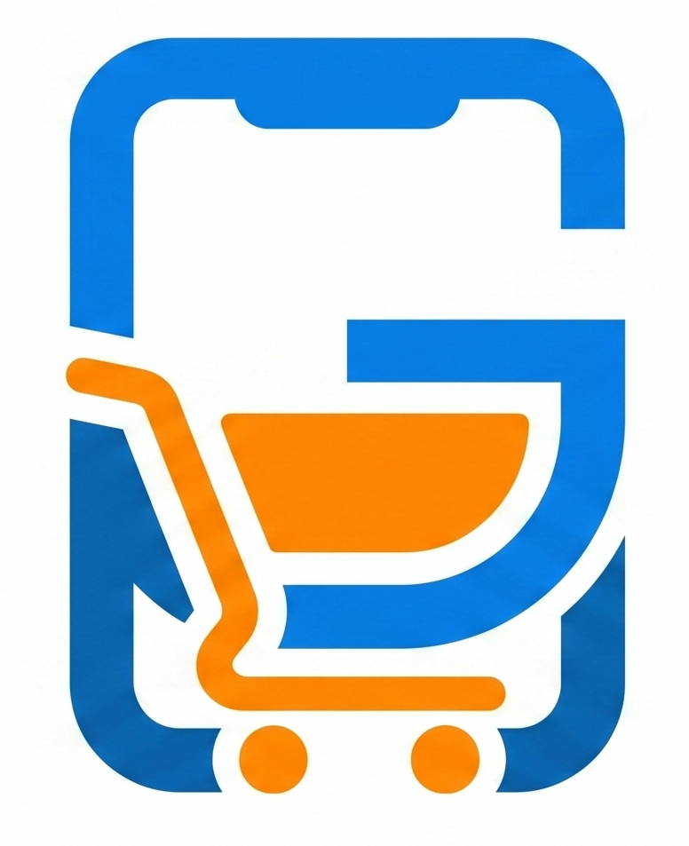

GuzmanGes
Pedidos en el móvil, sincronizados con tu ERP.
Iago Guzmán · Proyecto Final · DAM 2025/2026
El comercial visita al cliente.
¿Y después qué?
Hoy en día, muchos comerciales aún trabajan así:
- Apuntan los pedidos en papel o en una libreta.
- Vuelven a la oficina y los transcriben uno por uno al ERP.
- No pueden consultar stock real ni precios delante del cliente.
- Si el cliente pide darse de alta, generan datos duplicados por las prisas.
Una aplicación móvil que funciona sin conexión
y se sincroniza con el ERP en tiempo real.
Captura el pedido en el momento. Funciona sin Wi-Fi.
Cuando hay red, todo fluye hacia el ERP.
Cómo cambia el día a día
Sin GuzmanGes
- Libreta, bolígrafo, hojas sueltas
- Errores al transcribir las notas al sistema
- Sin stock real hasta llamar a la oficina
Con GuzmanGes
- Pedido capturado en el móvil, en el momento
- Catálogo con stock y precios actualizados
- Funciona sin cobertura
Qué hace la app
Gestión de clientes
Listado, búsqueda por nombre, razón social o CIF, alta de nuevos clientes con validación oficial de CIF/NIF y detección de duplicados. Sincronización bidireccional con Odoo.
Catálogo de productos
Stock y precios sincronizados desde Odoo, disponibles sin conexión. Búsqueda por descripción, referencia o código de barras. Imprescindible cuando el comercial atiende a varios clientes en un día.
Creación de pedidos
Selección de cliente, añadido de líneas con totales en vivo, observaciones libres. Cálculo automático de IVA y recargo de equivalencia según la posición fiscal del cliente.
Sincronización inteligente
Funciona sin Wi-Fi y sube todo a Odoo cuando vuelve la red. Detecta clientes y pedidos cancelados en el ERP y los hace desaparecer de la app automáticamente.
Un día tipo
Inicio sesión. La app se sincroniza y descarga productos y clientes actualizados.
Visito a un cliente sin cobertura. Capturo un pedido nuevo, queda en local.
Doy de alta un cliente nuevo y le hago ya el pedido. Todo sin red.
Pulso Sincronizar. Todo sube a Odoo en segundos.
Mientras en el modelo antiguo seguiría transcribiendo notas hasta la noche, aquí ya he terminado.
¿Por qué hace falta GuzmanGes?
Para Odoo 18 Community no existe una alternativa que combine precio razonable, soporte offline y compatibilidad sin Enterprise.
App oficial de Odoo Sales
- Requiere Odoo Enterprise (licencia anual)
- Necesita conexión permanente
- Pensada para vendedores con CRM, no para preventa de ruta
Apps de terceros
- Suscripción mensual por usuario
- Las que conocemos exigen más infraestructura o un servicio en la nube
- Dependencia de un proveedor externo
GuzmanGes
- Compatible con Odoo Community
- Funciona sin conexión
- Pensada específicamente para preventa de ruta
La parte
técnica
Stack, arquitectura, retos durante el desarrollo.
Stack tecnológico
App móvil
Flutter 3.35 (Dart)
Provider · sqflite · Dio
Un solo código para Android e iOS.
Backend
Spring Boot 4.0 (Java 21)
Spring Security · JPA · JWT
API REST documentada con OpenAPI.
Base de datos
MySQL 8.0 central
SQLite en el móvil
Caché local + cola de pendientes.
ERP
Odoo (XML-RPC)
res.partner · product.product · sale.order
Integración bidireccional.
Despliegue
Docker + Compose
Imagen ligera y reinicio automático
Levantar el backend con un solo comando.
CI/CD
GitHub Actions
APK + IPA + imagen Docker
Releases automáticas en cada tag.
Diagrama de despliegue

Dificultades técnicas
encontradas
Tres problemas reales que aparecieron durante el desarrollo y cómo se resolvieron.
Reconciliación de borrados
Si la sincronización es incremental, ¿cómo se entera la app de que un cliente se ha borrado en el ERP?
El problema
La app pide los clientes modificados desde X. Pero un cliente borrado ya no existe: el servidor no puede devolverlo, así que la app no se entera y se le queda para siempre.
La solución
El backend nunca borra físicamente: marca activo = false y actualiza fechaModificacion. La app recibe esa actualización y filtra por los activos.
Mismo principio aplicado a pedidos cancelados o eliminados en Odoo.
Provincias: no son texto, son objetos
Odoo no guarda la provincia como una cadena, sino como un registro de res.country.state con su propio ID.
El problema
Al dar de alta un cliente desde la app hay que enviarle a Odoo el ID exacto de la provincia. Pero el comercial escribe "Coruña", "A Coruña", "LA CORUÑA"… y cualquier variación que no coincida exactamente impide crear el cliente.
La solución
El backend descarga el catálogo completo de provincias españolas desde Odoo, lo cachea, y al recibir un alta hace un matching normalizado (sin tildes, sin mayúsculas, sin artículos) para resolver el ID correcto antes de enviar a Odoo.
iOS es... iOS
Tres bugs específicos de iOS que no se reproducen en el simulador ni en Android:
- El teclado numérico no tiene botón "Hecho": solución con tap fuera + scroll dismiss.
- Al volver de un selector, iOS restaura el foco al TextField anterior y reabre el teclado: solución forzando
TextInput.hidea nivel del SO. - El build de IPA sin firma no es trivial: hay que empaquetar manualmente el
.appdentro dePayload/.
Cómo se protegen los datos
🔐 Autenticación
JWT con HMAC SHA-256, caducidad 24 h. Contraseñas con BCrypt.
👤 Autorización
Roles ADMIN vs PREVENTA. Cada preventa solo ve sus propios pedidos.
🛡️ Validaciones
Bean Validation en el backend + validación en cliente (CIF/NIF) antes del POST.
🔑 Secrets fuera del código
Variables de entorno (.env) para JWT, MySQL y Odoo. Nada hardcodeado.
Tan simple como tres comandos
cp .env.example .env # 1. Copiar plantilla de variables
# editar .env con las credenciales reales...
docker compose up -d --build
# 2. Levantar todo (API + MySQL)
# fin. # 3. Abrir http://servidor:8080/swagger-ui.html
Acompañado de un workflow de CI/CD que genera automáticamente APK, IPA e imagen Docker en cada release de GitHub. Cero trabajo manual de empaquetado.
Limitaciones y líneas futuras
Limitaciones conocidas
- Los usuarios de la app no pueden gestionarse desde la propia app: hay que hacerlo desde los endpoints REST.
- Los productos no tienen foto asociada en la app.
- No existe una vista del catálogo de productos a modo de escaparate visual.
- La sincronización es solo bajo demanda, no en segundo plano.
- El IPA de iOS no está firmado oficialmente (re-firma cada 7 días con sideloading).
Líneas futuras
- Modelo de licencias por usuario para distribución comercial.
- Soporte de descuentos en los pedidos e integración con las pricelists y ofertas configuradas en Odoo.
- Endpoint público de recuperación de contraseña con verificación por email.
- Sincronización en segundo plano cuando hay Wi-Fi.
- Soporte multi-empresa en un mismo despliegue.
- Líneas de pedido con tipos especiales (sección, nota) según se configuren en Odoo.
Gracias
¿Alguna pregunta?
Iago Guzmán · DAM 2º · 2025/2026